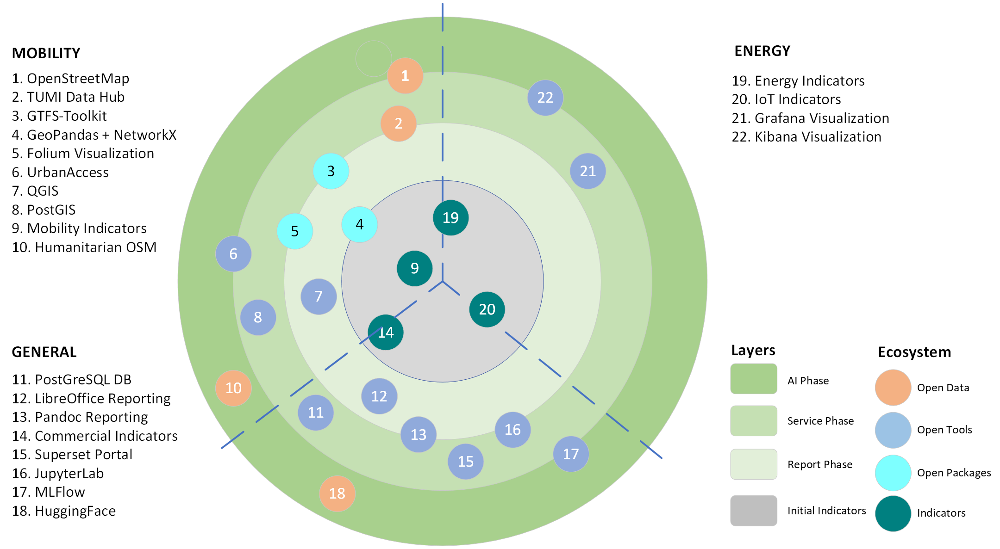
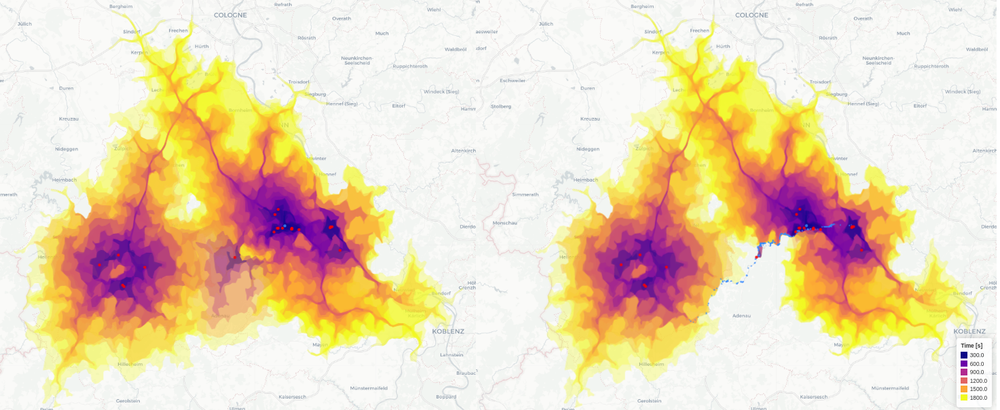
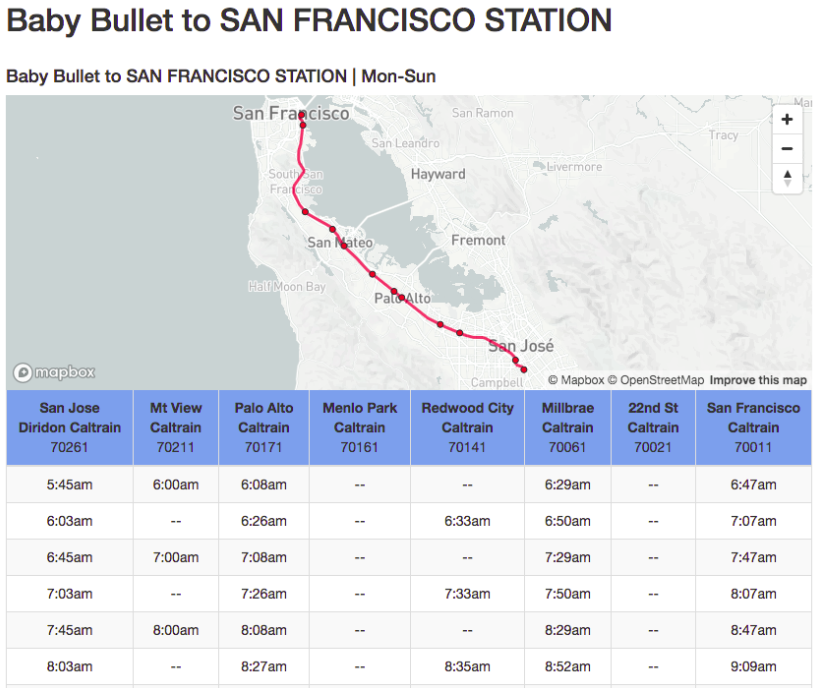
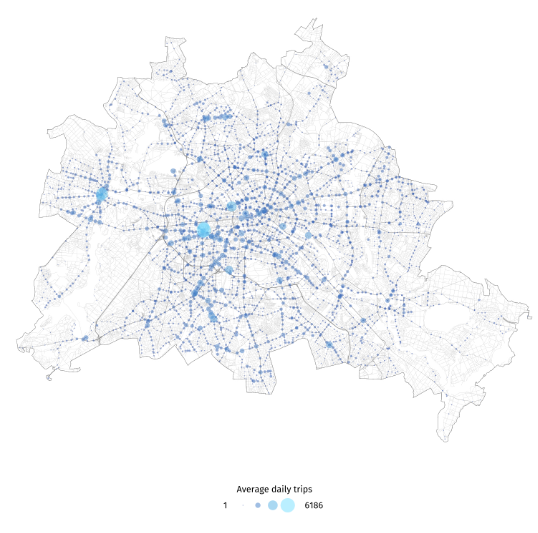
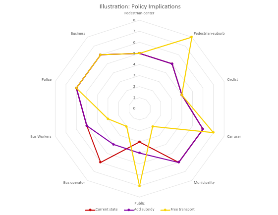
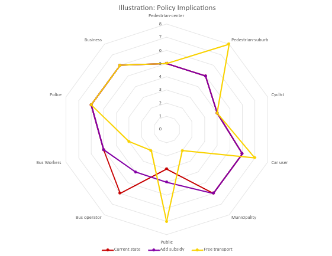

Transport data in the Wild#

WARNING The content is based on my exploration of the community tools. It is by no means an overall introduction to OSS for mobility.
e.g.: usage of QGIS is much more present in the community, but is not part of my tools.
INFO
The topics might be overwhelming, so feel free to jump in at anytime!
Table of Contents#
introduction
logistics vs transport vs mobility
why data
maps
OSM, state of the city
state of transport
routing
GTFS, tracking and GPS
accessibility and bias
modality, YOLO, traffic optimization
econ-101
costs
Introduction#
logistics vs transportation vs mobility, and data


Why data#
the value of digital infrastructure
CHANGE: It takes time to setup a sustainable process of improvement, as people have resistance and different views. Having a consistent baseline helps having significant improvements that do not fade away.
INSTITUTIONALISATION: The information should not be kept by people that happen to be in that position, as those people might leave or change position. Knowledge transfer is easiest through tools and data.
PROOF: Proving a point and the significance of a counter-intuitive argument to a complex problem requires effort. Data and tools make that happen.
HISTORICAL COMPARISON: When seeing the evolution in the city, one can understand patterns and decide for significant actions and policies.
GEOGRAPHICAL COMPARISON: Comparing with other cities in the same scale or similar geography provides some baseline to compare with, and what to improve first.
Tools?#
Maps#
OSM, cities, networks

State of the city using OSM data#
landuse and buildings
import warnings
warnings.filterwarnings('ignore')
std_kwargs = {
"figsize":(12, 12),
"legend":True,
"legend_kwds":dict(loc="upper left", ncol=3, bbox_to_anchor=(1, 1)),
}
from pyrosm import OSM, get_data
osm = OSM(filepath="data/tirana.pbf")
osm.get_landuse().plot(column="landuse", **std_kwargs)
<Axes: >
buildings = osm.get_buildings()
ax = buildings.plot(column="building", **std_kwargs)

Your neighborhood#
nodes, edges, and green areas
import osmnx as ox
# Specify the name that is used to seach for the data
place_name = "Njësia Bashkiake Nr. 2, Tirane, Albania"
graph = ox.graph_from_place(place_name)
# Retrieve nodes and edges
nodes, edges = ox.graph_to_gdfs(graph)
display(nodes.head(3))
display(edges.head(3))
| y | x | street_count | highway | geometry | |
|---|---|---|---|---|---|
| osmid | |||||
| 15460830 | 41.327375 | 19.821887 | 4 | NaN | POINT (19.82189 41.32737) |
| 15492718 | 41.324410 | 19.822117 | 4 | traffic_signals | POINT (19.82212 41.32441) |
| 15492719 | 41.323970 | 19.822222 | 3 | NaN | POINT (19.82222 41.32397) |
| osmid | highway | oneway | reversed | length | name | geometry | lanes | maxspeed | width | ref | bridge | service | access | junction | tunnel | |||
|---|---|---|---|---|---|---|---|---|---|---|---|---|---|---|---|---|---|---|
| u | v | key | ||||||||||||||||
| 15460830 | 8234683398 | 0 | 623138259 | pedestrian | False | False | 7.587 | NaN | LINESTRING (19.82189 41.32737, 19.82187 41.32744) | NaN | NaN | NaN | NaN | NaN | NaN | NaN | NaN | NaN |
| 6419674079 | 0 | 469986175 | service | False | True | 11.402 | Rruga Murat Toptani | LINESTRING (19.82189 41.32737, 19.82191 41.327... | NaN | NaN | NaN | NaN | NaN | NaN | NaN | NaN | NaN | |
| 258169545 | 0 | 624093873 | secondary | True | False | 73.826 | Rruga Abdi Toptani | LINESTRING (19.82189 41.32737, 19.82205 41.327... | 2 | NaN | NaN | NaN | NaN | NaN | NaN | NaN | NaN |
import matplotlib.pyplot as plt
def plot_cool_neighborhood(area, buildings, parks):
# plot
fig, ax = plt.subplots(figsize=(12,8))
# Plot all
area.plot(ax=ax, facecolor='black', zorder=0)
edges.plot(ax=ax, linewidth=0.5, edgecolor='dimgray', zorder=1)
buildings.plot(ax=ax, facecolor='silver', alpha=0.7, zorder=2)
parks.plot(ax=ax, color='green', alpha=0.7, markersize=10, zorder=3)
plt.tight_layout()
plt.axis('off')
Your neighborhood using NetworkX#
# Get place boundary related to the place name as a geodataframe
area = ox.geocode_to_gdf(place_name)
# List key-value pairs for tags
tags = {'leisure': 'park', 'landuse': 'grass'}; parks = ox.geometries_from_place(place_name, tags)
tags = {'building': True}; buildings = ox.geometries_from_place(place_name, tags)
plot_cool_neighborhood(area, buildings, parks)

State of Transport#
routes and stops
routes = ["bus", "ferry", "railway", "subway", "train", "tram", "trolleybus"]
rails = ["tramway", "light_rail", "rail", "subway", "tram"]
# get transit data
transit = osm.get_data_by_custom_criteria(...
# Test reading all transit related data (bus, trains, trams, metro etc.)
# Exclude nodes (not keeping stops, etc.)
routes = [
"bus", "ferry", "railway", "subway", "train", "tram", "trolleybus"]
rails = ["tramway", "light_rail", "rail", "subway", "tram"]
bus = ["yes"]
transit = osm.get_data_by_custom_criteria(
custom_filter={
"route": routes,
"railway": rails,
"bus": bus,
"public_transport": True,
},
# Keep data matching the criteria above
filter_type="keep",
# Do not keep nodes (point data)
keep_nodes=True,
keep_ways=True,
keep_relations=True,
)
transit.plot(**std_kwargs)
<Axes: >

# Apply the same bounding box filter and retrieve walking network
walk = osm.get_network("walking")
walk.plot(color="k", lw=0.9, alpha=0.2, **std_kwargs)
<Axes: >
State of network#
roads and neighborhoods
import networkx as nx; import osmnx as ox; import pandas as pd
def get_stats_for_location(location):
# info
import networkx as nx
import osmnx as ox
import pandas as pd
def get_stats_for_place(place):
gdf = ox.geocode_to_gdf(place)
area = ox.project_gdf(gdf).unary_union.area
G = ox.graph_from_place(place, network_type="drive")
# calculate basic and extended network stats, merge them together, and display
stats = ox.basic_stats(G, area=area)
for k, count in stats["streets_per_node_counts"].items():
stats[f"{k}way_int_count"] = count
for k, proportion in stats["streets_per_node_proportions"].items():
stats[f"{k}way_int_prop"] = proportion
# delete the no longer needed dict elements
del stats["streets_per_node_counts"]
del stats["streets_per_node_proportions"]
return stats
# get the street network for a place, and its area in square meters
places = ["Tirana, Albania", "Durres, Albania", "Elbasan, Albania", "Shkoder, Albania"]
infinite_time = False # not for running multiple times
if infinite_time:
data = []
for place in places:
print(f"Working on {place}...")
data.append(get_stats_for_place(place))
cities_network_stats_df = pd.DataFrame(data)
cities_network_stats_df.index = places
cities_network_stats_df.to_csv('data/network-run.csv')
display(cities_network_stats_df)
else:
cities_network_stats_df = pd.read_csv('data/network-run.csv', index_col=0)
if infinite_time:
# get the street network for a place, and its area in square meters
place = "Tirana, Albania"
gdf = ox.geocode_to_gdf(place)
area = ox.project_gdf(gdf).unary_union.area
G = ox.graph_from_place(place, network_type="drive")
# calculate betweenness with a digraph of G (ie, no parallel edges)
bc = nx.betweenness_centrality(ox.get_digraph(G), weight="length")
# add the betweenness centraliy values as new node attributes, then plot
nx.set_node_attributes(G, bc, "bc")
nc = ox.plot.get_node_colors_by_attr(G, "bc", cmap="plasma")
kw_style_nodes = {"node_size":5, "node_zorder":2, "edge_linewidth": 0.3, "edge_color": "w", "figsize":(12, 12)}
cities_network_stats_df
| n | m | k_avg | edge_length_total | edge_length_avg | streets_per_node_avg | intersection_count | street_length_total | street_segment_count | street_length_avg | ... | 2way_int_count | 3way_int_count | 4way_int_count | 5way_int_count | 0way_int_prop | 1way_int_prop | 2way_int_prop | 3way_int_prop | 4way_int_prop | 5way_int_prop | |
|---|---|---|---|---|---|---|---|---|---|---|---|---|---|---|---|---|---|---|---|---|---|
| Tirana, Albania | 6657 | 14277 | 4.289320 | 1051280.430 | 73.634547 | 2.510590 | 4829 | 616092.094 | 8269 | 74.506239 | ... | 70 | 4298 | 454 | 7.0 | 0.0 | 0.274598 | 0.010515 | 0.645636 | 0.068199 | 0.001052 |
| Durres, Albania | 3523 | 8286 | 4.703946 | 804217.552 | 97.057392 | 2.543287 | 2585 | 436423.011 | 4454 | 97.984511 | ... | 11 | 2298 | 274 | 2.0 | 0.0 | 0.266250 | 0.003122 | 0.652285 | 0.077775 | 0.000568 |
| Elbasan, Albania | 1654 | 4062 | 4.911729 | 371970.123 | 91.573147 | 2.602177 | 1241 | 191961.137 | 2131 | 90.080308 | ... | 1 | 1073 | 165 | 2.0 | 0.0 | 0.249698 | 0.000605 | 0.648730 | 0.099758 | 0.001209 |
| Shkoder, Albania | 2031 | 4405 | 4.337765 | 335608.415 | 76.188062 | 2.358936 | 1349 | 181444.820 | 2391 | 75.886583 | ... | 5 | 1277 | 67 | NaN | 0.0 | 0.335795 | 0.002462 | 0.628754 | 0.032989 | NaN |
4 rows × 28 columns
fig, ax = ox.plot_graph(G, node_color=nc, **kw_style_nodes)

Routing#
trips, gtfs, accessibility, bias
Tracking your trips#
track your bus usage using the GPS in your phone, and download the data for analysis
using OSMAnd
|
|
Analyzing trips#
Analyzing gps data for people, bikes, buses, cars, birds, football players
using movingpandas https://movingpandas.org/
People moving |
Birds moving |
Football |
|---|---|---|
|
|
|


Route finding#
how to get from one place to next?
use OSMNX https://osmnx.readthedocs.io/en/stable/

OpenRouteService#
routing made easy for multiple purposes
use OpenRouteService https://openrouteservice.org/
Logistics |
Disaster management |
Healthcare map |
|---|---|---|
|
 |
|


Urban Transport#
GTFS, tools, metrics, counting
Standard#
standard way to describe bus schedules
General Transit Feed Specifications https://gtfs.org/

Understanding routes#
checking gtfs data in QGIS, potentially making changes
using GTFS-GO MIERUNE/GTFS-GO

Updating schedules#
automatic schedule creation using gtfs
using gtfs-to-html blinktaginc/gtfs-to-html

Creating maps automatically#
making visually pleasing maps of urban transport
using openmetromaps https://www.openmetromaps.org/ (last year)
or transitmap juliuste/transit-map (5 yrs ago)

Comparing urban transport#

Urban Mobility Index#
not open-source yet, but interesting metrics
using UMI https://urbanmobilityindex.here.com/city/berlin
Daily trips |
Stops |
Traffic |
|---|---|---|
 |
|
|


Accessibility analytics#
checking gtfs data in QGIS, potentially making changes
using R Accessibility with R example
Bus |
School |
|---|---|
|
|


Traffic counting#
through AI video analysis, and Grafana support
using Grafana https://grafana.com/
YOLO |
Grafana |
|---|---|
|
|


Econ101#
actors, elasticity, demand, supply
introduction …
Policies and actors#
mapping who is interested
 
 
See you next time#
actual Econ101 and e-Vehicles and more
Other steps#
Generic Department > Public Transport Research Institute
Geoinformatics + Transportation
Very public oriented
Direct work with Logistics
OSM Albania not only for mapping buildings and areas
Public transport working group
Logistics directed
Public Transport (discussion and tools)#
OSM - Public transport: https://wiki.openstreetmap.org/wiki/Public_transport
Proposal: https://wiki.openstreetmap.org/w/index.php?oldid=625726
Community Discussion on OSM about PT: https://community.openstreetmap.org/search?q=public transport
OSM - Public transport-tools: https://wiki.openstreetmap.org/wiki/Public_transport/Tools
Public transport assistant for JOSM: https://wiki.openstreetmap.org/wiki/JOSM/Plugins/PT_Assistant
Plugin JOSM: https://wiki.openstreetmap.org/wiki/JOSM/Plugins/public_transport
Track your trips using OSMAnd: https://wiki.openstreetmap.org/wiki/Public_transport/Tracking_tutorial
Trip recording: https://osmand.net/../images/user/plugins/trip-recording/
Tirana bus-stops (not updated): https://openstreetbrowser.org/#pt/r7517386&map=14/41.3311/19.8187&basemap=osm-mapnik&categories=pt
Exercises#
How to get OSM data about state of network?
How to print routes and make them alive?
How to get and use GTFS?
How to use routing services?
How to optimize routes?
How to increase demand?
How to increase supply?
How to analyze gendered-data?
How to analyze patterns of movement?